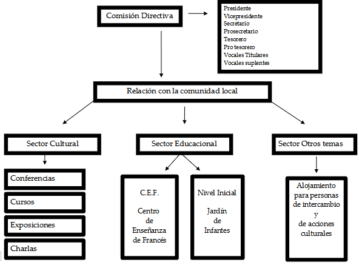
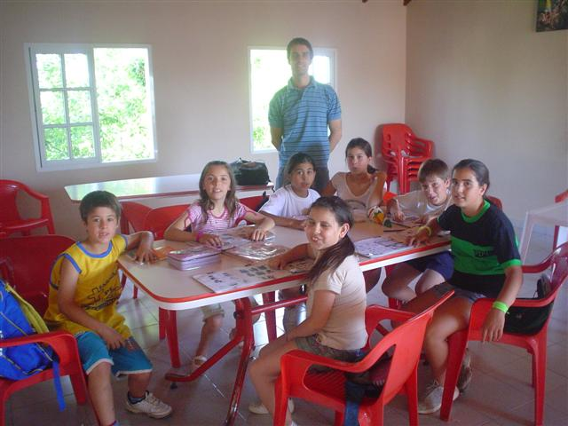
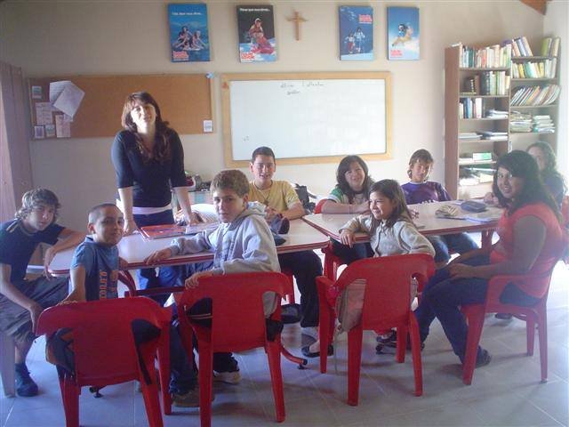
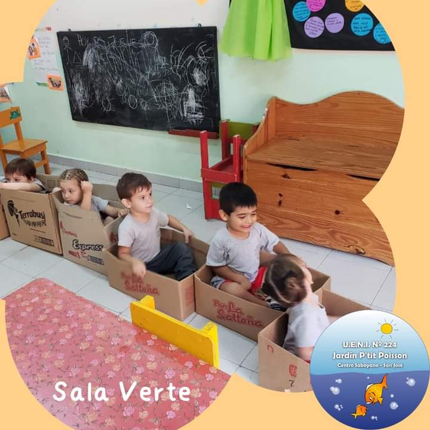
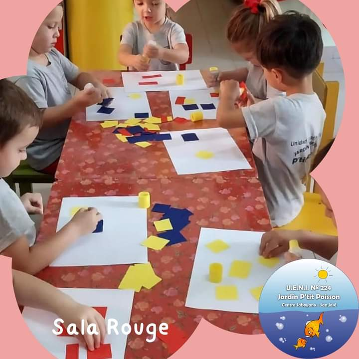
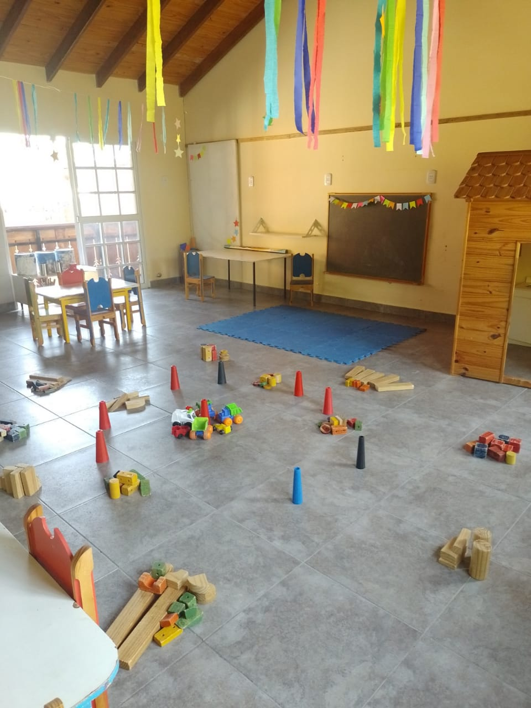
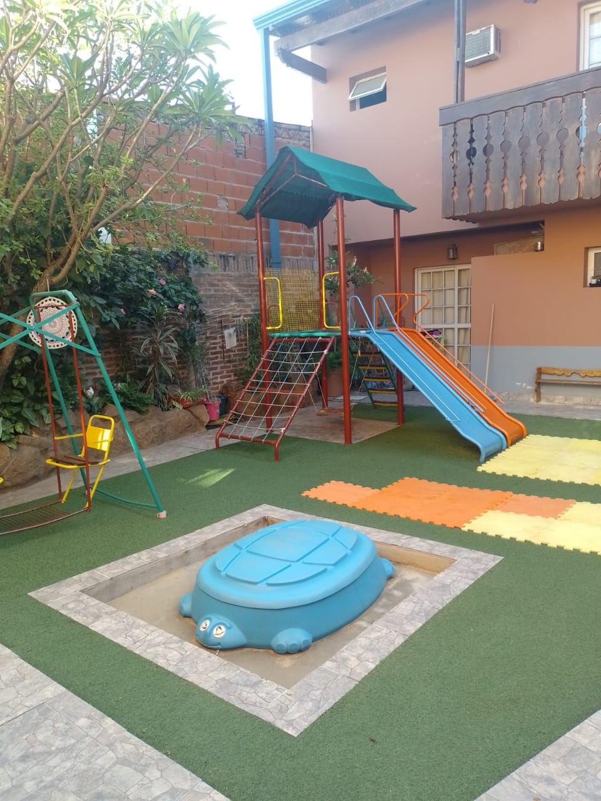

Contacto
Domicilio: Urquiza 1001
3283 San José – Entre Ríos – República Argentina
Teléfono (0) 3447 471573
Correo electrónico: centrosaboyanodesanjose@gmail.com
Usted puede colaborar con la institución haciéndose socio (link a ficha de registro de socios)
Origenes de la Colonia San José
La colonia San José surge como resultado de corrientes inmigratorias que se producen a mediados del siglo XIX.
Las guerras, los matrimonios con gran número de hijos, la falta de trabajo, la estrechez de los valles alpinos y el deseo de prosperar, hizo que algunas personas decidieran abandonar sus tierras en busca de un futuro mejor.
Argentina, luego de la sanción de la Constitución de 1853, abría sus puertas a quienes quisieran venir a habitar estas vastas extensiones absolutamente despobladas. Mientras tanto en Suiza, la casa contratista de Beck y Herzog ofrecía enormes posibilidades de progreso a quienes se embarcaran en su empresa.
El primer contingente de saboyanos (1) venia destinado a la provincia de Corrientes, pero problemas políticos del gobernador Pujol hizo que éste rescindiera el contrato con el representante de la casa contratista, Jean Le Long, quien inmediatamente contactó con don Justo José de Urquiza, presidente de la Confederación Argentina. Urquiza, deseoso de fomentar la agricultura en Entre Ríos, les brindó inmediato apoyo y les ofreció tierras al sur de la provincia, en Ibicuy. Pero estas tierras eran inundables por lo que una colonia no tenía posibilidades de prosperar. Por tal razón, el agrimensor francés Carlos Tomás Sourigues (2), originario de Bayona se dedicó a buscar otros terrenos más adecuados y los encontró donde estaba la calera del rincón Espiro entre el arroyo de La Leche y el del Medio. El traslado del contingente desde Ibicuy hasta el asentamiento definitivo se produjo el 28 de junio y el 1 de julio de 1857 arribaron a tierra firme en la goleta Rey David. No obstante se fija como día de fundación el 2 de julio. Sourigues delimitó los terrenos, lo cual llevó su tiempo porque todo estaba por hacerse, pero a medida que fueron tomando posesión de esas tierras comenzaron a levantar precarias construcciones que luego mejorarían con el tiempo. Esas parcelas estaban alejadas de la costa del rio Uruguay, dado que el terreno es allí muy pedregoso. La colonia crecerá hacia el oeste y en el centro del trazado se dejó un gran espacio para ubicar más adelante la iglesia, la escuela y demás edificios públicos. Ese centro que fuera denominado La Plaza por los inmigrantes, es hoy ciudad de San José.

Se tuvo especial atención de ubicar a los recién llegados según su origen e idioma: al noreste los franceses, al suroeste los suizos y al noroeste los piamonteses Los colonos firmaron con el General Urquiza un contrato impreso en francés y en español, cuyo objetivo era su permanencia definitiva y con un elemento movilizador: la actividad agropecuaria. A cada familia se le concedieron 27 hectáreas y los elementos necesarios para labrar y subsistir en los primeros tiempos. Tuvieron un plazo de 4 años para saldar sus deudas, luego de lo cual se transformaron en propietarios. Se les permitió también formar una Comisión de 5 miembros para hacer las observaciones y en caso de necesidad, dirigirse a una autoridad mayor. Esa autoridad mayor fue el Dr. Alexis Peyret, abogado de profesión quien fuera el primer administrador que tuvo la incipiente colonia.

Poco a poco la colonia San José empezó a prosperar y, por necesidad, para poder sacar la producción, se construyó un puerto. Este puerto daría origen, posteriormente a la Villa Colón, lo que sucede el 12 de abril de 1863.
La organización de la colonia San José resultó tan exitosa que se transformó prácticamente en el modelo de colonización y subdivisión de la tierra de todo el departamento Colón, que vio nacer no solo a la Villa Colón, sino también a Villa Elisa, Colonia Hughes, Colonia San Anselmo, Colonia Hambis, entre muchas otras.
Primer contingente de inmigrantes saboyanos arribados en 1857
(Extraído del libro “Urquiza, colonizador” de Manuel Machi, Buenos Aires, 1949 y ampliado con las investigaciones genealógicas realizadas en la institución)
Inmigrantes con familia
- Brelaz Claude (28 años) y Marie Vernaz (27 años)
- Boinnard François (26 años) y Marie Françoise Treboux (23 años)
- Boujón François (20 años) y Marie Josephe Laurent (18 años)
- Buffet André (51 años) y Francine Beugnier (41 años) con Ambroise (13 años), François (17 años), Celestine (12 años), Alphonse (11 años), Suzanne (6 años ), Julie (4 años)
- Comte Jean Pierre (50 años ) y Jeanne Gallay (40 años) con Eugenio (4 años)
- Crepy–Tochet François (35 años) y Reine Delerse (30 años) con Alphonse (13 años)
- Crepy–Banfin Joseph (40 años) y Marie Célestine Lugon (25 años)
- Dupraz Jacques (58 años) y Anne Michoud(48 años) con Marie Elise (28 años), Auguste (26 años), Benjamín (21 años), Jean Louis (18 años), Félix (15 años) Julie (14 años) Josette (7 años) y Josephine (3 años)
- Laurent François (52 años, viudo de Marie Boujard) con Peronne (35 años), Pierre Marie (26 años), Rosette (28 años) Marie (19 años) Hyppolite (24 años) Jean Marie (20 años), Marie Francoise (16 años) Somin (50 años) y François Coillard (24 años)
- Maxit Joseph (36 años) y Andrée Anne Peillex (38 años) con Jules (4 años) y Marie Henriette (9 meses)
- Mudry Jean Marie (43 años) viudo con Françoise (14 años) Jean Maurice (4 años) Jean Joseph ( 1 año)
- Paccot Cypriene (33 años) y Veronique Gallay (32 años) con Antoine Joseph (2 años)
- Pasquier Simón ( 34 años) con Claudine Peillex (34 años)
- Richard François (50 años) y Marguerite Brottier (54 años) con Jean (16 años) Ambroise (14 años) François (12 años) Louis (10 años) y Julie Lavanche (24 años)
Inmigrantes sin familia
- Bochaton Pierre
- Bondaz Francisco
- Boujon Jean
- Command Francisco
- Crepy Emilio
Saboya y Alta Saboya

Alta Saboya y Saboya son dos departamentos franceses que pertenecen a una de las trece regiones que, junto con los territorios de Ultramar, conforman la República Francesa : la región Auvergne-Rhône-Alpes. Su capital y ciudad más poblada es Lyon.
Están situados en el centro de Europa, al occidente de la cadena alpina y contienen sus cumbres más elevadas. Annecy y Chambéry son respectivamente sus capitales.-
Saboya y Alta Saboya fueron durante mucho tiempo una nación independiente y desde 1860 fueron anexadas al territorio francés.
La montaña más alta de los Alpes, Mt. Blanc, se encuentra en la Alta Saboya, al igual que los populares centros turísticos de Chamonix, Courchevel, Megève y St Gervais, entre otros. La ciudad olímpica de Albertville, la antigua capital real de Chambéry y la Abadía de Hautecombe se encuentran en el departamento mucho más agrícola de Saboya, que produce excelentes vinos blancos.
Ambos departamentos son bien conocidas por sus estaciones de esquí, pero también por sus hermosos lagos (Lac du Bourget, Lac d'Annecy, Lac d'Aiguebelette), que atraen a un gran número de veraneantes.
La ciudad de Annecy, con sus hermosos canales, "Vieille Ville" (Ciudad Vieja) y su castillo en lo alto de una colina, está considerada como una de las ciudades más bellas de Europa; alberga un festival internacional de películas de animación (cada dos años, en mayo), así como un gran espectáculo de fuegos artificiales (La Fête du Lac), en agosto. Además, el casco antiguo de la ciudad está repleto de restaurantes que preparan la reconocida cocina de la región. Es un destino muy popular para los turistas de todo el mundo.
Los franceses en la Colonia San José
>Hace unos años, digitalicé los libros de la parroquia de San José. No todos, solo los primeros porque había visto que algunos estaban muy deteriorados y temía que se perdiera nuestra historia. De hecho, algo se perdió porque lo que hoy es el libro N 1 de Bautismo, en realidad es el segundo ya que, según el Libro de Oro del Centenario de San José, la primera criatura bautizada en 1858, fue María Josefina Crepy, hija de José Crepy y María Celestina Lugon y hoy el primer bautismo es de 1864 y corresponde a Alfonsina hija de Celerina Pinget y de Alejo Peyret. Es decir que entre 1858 y 1864 se han perdido un número importante de nombres.
Pude observar que aquí hubo muchos más inmigrantes de los que están registrados en el palacio San José, registro que dejó de realizarse a partir de la muerte de Urquiza en 1870. Sabemos que muchos llegaron invitados por sus familiares o amigos. Pero de otros, no sabemos nada.
La nómina de personas que verán a continuación surge a partir de las publicaciones de los profesores Manuel Machi y Celia Vernaz. Pero en sus listas, solamente figuran los hombres. Me interesó conocer primero el nombre de las mujeres Ellas también tenían derecho a ser nombradas.
Cómo completé la información? Bueno, a partir de la digitalización de la parroquia de San José que mencioné al principio, de los Censo de 1869 y de 1895, de la documentación que he traído o me han enviado desde Francia. En muchos casos, debo agradecer la ayuda de descendientes como también de Christian Gavard y de Pierre Bezy, quienes me han aportado mucha colaboración y siguen haciéndolo cada vez que los consulto.
Otras fuentes analizadas fueron:
- Libro de Oro del Centenario de la colonia San José
- Las Colonias. Informe sobre el estado actual de las colonias agrícolas de la República Argentina de Guillermo Wilcken. Páginas 209 a 232.
- Los franceses en la colonia San José de Celia Vernaz
- Urquiza colonizador de Manuel Macchi
- Las familias fundadoras de la Colonia San José según el Censo Nacional de 1869 de CARLOTA GUZZO CONTE-GRAND .Épocas - revista de historia - 2013
- Geneanet,
- FamilySearch.org ,
- Archivos departamentales de Saboya y de Alta Saboya
Seguramente, esta investigación, que me está llevando años, tendrá errores, por lo que está en continua modificación. Espero sepan comprender. No es fácil determinar algunas informaciones cuando los nombres se repiten continuamente (abuelo, padre, hijo), los apellidos aparecen escritos con diferentes grafías o cuando dos personas se llaman de igual manera pero uno es saboyano y el otro valesano, no tienen relación de parentesco, pero convivieron en la colonia al mismo tiempo. Rosa Maxit
El Legado de la Memoria
antes de que la historia olvide los hechos,
antes de que se marchen los que recuerdan,
antes de que los recuerdos se fundan a negro,
antes de que las penas y las alegrías desaparezcan en la nada,
antes de todo eso,
ahora que aún tienes tiempo,
haz lo posible para recordar tu historia,
para no olvidar tus raíces.
En junio de 2021, Gustavo Bourlot, compartió en la página de Facebook “Descendientes de Franceses en Argentina” un INSTRUCTIVO sobre cómo hacer su propia genealogía y hallar antepasados en Francia.
Conociendo la comuna desde donde vinieron, se les encuentra en los archivos departamentales franceses en línea. Saberlo es la clave.
Hallar ancestros en Francia es hallar actas que registran acontecimientos de vida. Para encontrar estas actas, que pueden ser de bautismo, nacimiento, casamiento, registros militares, etc, en principio hay que saber de dónde vino el antepasado, sea hombre o mujer. Pero suele ocurrir que al pasar varias generaciones esa información se pierda. Para poder recuperarla existen varios caminos posibles, a saber.
Primero que nada hay que encontrar a los antepasados franceses en Argentina. Con ese fin se debe conocer nombre del inmigrante y en lo posible lugar de radicación. Teniendo estos datos, se pueden consultar diferentes registros:
- Centro de Estudios Migratorios Latinoamericanos (CEMLA). Se trata de un registro de ingreso de inmigrantes al puerto de Buenos Aires, de 1880 a 1960 aproximadamente. ➡ https://cemla.com/ Entre otros datos este registro indica fecha de arribo, nombre del barco en que llegaron, puerto de procedencia, y desde 1930 aproximadamente lugar de nacimiento del inmigrante (1).
- Censos Nacionales y Registros parroquiales de Argentina. Los mismos se pueden ver on-line en la página web de Family Search, aunque no todo ha sido digitalizado. ➡ https://www.familysearch.org/.../coll.../location/1927135...
- Registros consulares. Muchas veces los inmigrantes al llegar se registraban en el consulado. Esos archivos se encuentran on-line también, y en general se los conoce como los Registros de Nantes (ya que en esa ciudad francesa se guardan los archivos históricos de los consulados franceses en el exterior). ➡ https://genfrancesa.com/.../registros-consulares-de-nantes/ También existen los Archivos Consulares de Paris, son una serie de registros del Consulado francés en Buenos Aires que van de 1829 a 1897. ➡ https://genfrancesa.com/.../declaraciones-consulado-de.../
Una vez hallado el antepasado en Argentina, su lugar de procedencia desde Francia, (que no es necesariamente el puerto desde donde partió hacia América), y su fecha de nacimiento (exacta o estimada), hay que realizar una búsqueda en los archivos departamentales franceses que correspondan a su lugar de procedencia. Por ejemplo: si un antepasado vino de la comuna de Seytroux, Alta Saboya, habrá que buscar en los archivos departamentales de Alta Saboya. No es exactamente así, pero los departamentos franceses equivalen a las provincias argentinas. Existen 101 departamentos en Francia, 5 de ultramar. En esos archivos es posible hallar actas de nacimiento, bautismos, casamientos, etc./
En caso de que no se encuentre la procedencia del antepasado, su hallazgo se vuelve difícil. Ya que hay millones de registros en línea a revisar.
Existen registros alternativos, para el caso que el lugar de procedencia de un antepasado no se pueda determinar. Aquí enumeramos algunos:
1. Solicitud de Pasaportes del Puerto de Bordeaux. Muchos inmigrantes partían hacia América desde el Puesto de Burdeos, existe on-line un registro de solicitudes de los años 1959-1861 y 1865-1887, aunque hay años faltantes. ➡️ https://genfrancesa.com/.../solicitud-de-pasaportes.../2. Emigración desde los Pirineos. ➡ https://genfrancesa.com/desde-los-pirineos-a-america/
➡ https://genfrancesa.com/inmigrantes/listas-christiane/
3. Geneanet, página de genealogía. ➡9* https://es.geneanet.org/
4. También es posible consultar otras páginas dedicadas a la genealogía
Finalmente, para vincularse con familiares lejanos que viven en Francia son útiles las Páginas Blancas de Francia, es decir, la guía telefónica: ➡https://www.pagesjaunes.fr/pagesblanches...
Organigrama
Comisión Directiva
| Cargo | Apellido y Nombre |
| Presidenta | Rosa Haydée Maxit |
| VicePresidenta | Celia Emma Vernaz |
| Secretario | Hugo César Martín |
| Prosecretario | Gloria Miriam Ballay |
| Tesorero | Susana María Dubois |
| Protesorero | Gaston Emilio Rossier |
| Vocal Titular 1° | Marta Beatriz Insúa-Bel |
| Vocal Titular 2° | Virginia Maxit |
| Vocal Titular 3° | Estela Isabel Izquierdo-Vauthay |
| Vocal Titular 4° | Lilia Ester Bianchi |
| Vocal Suplente 1° | Graciela Elena Zanini-Vernaz |
| Vocal Suplente 2° | Ana María Tramontin |
| Vocal Suplente 3° | Sonia Virginia Smietano |
| Vocal Suplente 4° | Aurora Eugenia Montaño |
| Revisor de Cuentas Titular 1° | Nadia Soledad Smietano |
| Revisor de Cuentas Titular 2° | Raúl Alberto Martínez |
| Revisor de Cuentas Suplente 1° | María Silvina Palacios |
| Revisor de Cuentas Suplente 2° | Silvina Noemí Laurent |
Objetivos y Actividades
El Centro Saboyano de San José
Nació en 1989 como un medio de enlace entre los saboyanos y los habitantes de San José relacionados por sangre y afecto a esa “familia” europea. Surge como un desmembramiento de la Asociación “Amigos del Museo Histórico Regional de la Colonia” hasta que en 1996 obtiene su propia personería jurídica.-
Objetivos:
- Difundir e intensificar el estudio de la lengua francesa.
- Realizar investigaciones genealógicas e históricas.
- Acentuar las relaciones socioculturales y afectivas con los habitantes de Saboya.
- Preservar las tradiciones y costumbres de nuestros ancestros.
- Proyectar las manifestaciones culturales del Centro a la comunidad.
- Integrar pueblos y culturas en una acción permanente y recíproca.
- Servir a los interesas comunitarios y propender al bien común.
Actividades
- Dictado de clases de francés, en distintos niveles.
- Jardín de infantes bilingüe.
- Investigaciones históricas y genealógicas,
- Recepción, alojamiento y atención de visitantes saboyanos y delegaciones especiales.
- Organización de eventos culturales.
- Participación en la Fiesta Nacional de la Colonización.
- Interrelación permanente con otras instituciones culturales (Museo Histórico Regional, Alianza Francesa, Comité de Asociaciones francesas y franco-argentinas).-
- Acopio de bibliografía y organización de la biblioteca en lengua francesa.-
El Edificio
a. Su inauguración
El 12 de noviembre de 2000, y ante la presencia del Embajador y del Cónsul General de Francia Sres. Paul Dijoud y Jean-Louis Rysto respectivamente, del Vice-Gobernador de la provincia de Entre Ríos, Sr. Edelmiro Pauletti, del Vicepresidente del Consejo General de Alta Saboya e Intendente de Ville La Grand: Sr. Raymond Bardet, autoridades locales y departamentales y ante la presencia de 150 saboyanos encabezados por el presidente de la Asociación Savoie-Argentine de Haute Savoie, Francia, Sr. Jean Favre, fue inaugurado el nuevo edificio que se alza en la esquina de Urquiza 1001.


El edificio, que se realizó con el aporte de capitales franceses, sobre un terreno donado por la Municipalidad de San José, concitó la atención y despertó admiración desde el nacimiento del proyecto. Efectivamente, el estilo y buen gusto de su diseño fue siempre admirado por quienes pasaban por el lugar.
Es de dos pisos: en la planta baja posee un salón de exposiciones y conferencias, dirección y sala de jardín de infantes, en tanto que en el primer piso se ubican las aulas de clase, sala de computación y biblioteca. Cuenta además con un departamento, también distribuido en dos pisos, que se alquila a turistas que visitan la zona.
Quince días antes de la inauguración y como una manera de demostrar el fraternal cariño que sienten los saboyanos por San José, cuatro de ellos viajaron especialmente a fin de realizar los tradicionales balcones que engalanan las fachadas interior y exterior.-
Como expresó Antoine de Saint-Exupéry: “Ser hombre es estar orgulloso por la victoria. Es sentir posando uno su piedra, que se contribuye a construir el mundo.” El Centro Saboyano de San José, es la suma de grano de arena sobre grano de arena y de ladrillo sobre ladrillo. Es también el resultado del esfuerzo de una comunidad que no olvida sus orígenes.

b. Ampliaciones y mantenimiento
El edificio que se inició con una sola sala de Jardín de infantes, hoy cuenta con cuatro más: dos en planta baja y dos en el primer piso. De todas ellas, hay una aún no ha sido finalizada. Todo esto se ha logrado gracias a presentaciones de proyectos al gobierno de Entre Ríos, a la colaboración de la Asociación Savoie-Argentine y a los beneficios que se realizan en la institución.
Por otra parte son múltiples las acciones que se han llevado a cabo para mantener el edificio en condiciones: colocación de césped sintético en el patio del jardín lo que le permite a las docentes desarrollar sus actividades con mayor protección para los niños, pintura exterior e interior.
Cursos de francés
El objetivo fundamental del Centro Saboyano es el estudio de la lengua francesa en todos los niveles requeridos: niños, adolescentes y adultos.-
Si bien se comenzó a dictar clases a los adultos, a partir de la creación del Jardín, muchos fueron los padres que desearon que sus hijos continuaran con el aprendizaje de la lengua. Hoy esa primera promoción de niños de jardín, casi todos ellos profesionales, muchos de ellos ya casados, han continuado con la tradición de enviar sus hijos a la institución porque comprendieron que saber francés es marcar una diferencia.
Diferentes profesores han pasado por sus aulas: Emilia Rivollier, hoy directora de la Alianza Francesa de Gualeguaychú, en esta provincia de Entre Ríos, Leticia Benítez, Nancy César, Matías Sauthier y Carina Pralong.- Todos ellos han realizado pasantías en Francia, todas siguen dictando sus clases en sus propios emprendimientos, en establecimientos secundarios, terciarios y universitarios



Jardin de Infantes
Desde 1993 el Centro Saboyano de San José cuenta con un jardín de infantes bilingüe llamado P’tit Poisson y al que asisten hoy niños de 1, 2, 3 y 4 años. La primera maestra jardinera fue la profesora Leticia Benítez, en ese momento estudiante del profesorado de francés, pero con extraordinarias condiciones para trabajar con niños por lo que pronto se ganó su confianza. No obstante no fue sino a partir de 2010 que se comenzó a armar el proyecto de reconocimiento por parte del Consejo General de Educación y así en 2011, por Resolución Nº 2474 se reconoció la creación de la Unidad Educativa Nº 224, “P’tit Poisson” para nivel inicial (salas de 3 y 4 años) incorporándose de este modo a la enseñanza oficial. Por otra parte, por disposición 0551 del 3 de octubre de 2012, se reconoce la sala de 2 años.
En la elaboración de ese proyecto trabajaron las profesoras Raquel Alicia Livio y Rosa Haydee Maxit, esta última presidenta de la institución desde su creación en 1989. Ambas fueron las responsables de la formulación de los PEI (Proyecto Educativo Institucional) y PCI, (Proyecto Curricular Institucional) ; las docente Nadia Smietano, Andrea Falco y María Isabel Acevedo , todas profesoras de Nivel Inicial realizaron la Planificación de los Proyectos Curriculares de Sección en tanto que Nancy César y Matías Udrizard Sauthier, profesores de Francés, tuvieron a su cargo la organización del CEF (Centro de Estudios de Francés)


 

 
Actividades culturales
|En el Centro Saboyano de San José se han realizado y se realizan innumerables actividades culturales: presentaciones de libros, conciertos de piano, cursos de perfeccionamiento para docentes, investigaciones genealógicas, cursos de Historia y Geografía regional, conferencias sobre temas de interés para los locales como “la masonería en la colonia San José” o “El patrimonio arquitectónico en Pueblo Liebig”, exposiciones fotográficas como “Descendientes, los saboyanos de hoy”en los que se puede observar los rostro de quienes descienden de aquellos saboyanos que llegaron a partir de 1857 en profesiones absolutamente diferente a los de sus ancestros o “La otra tierra” en la que se muestra como son hoy los pueblos de donde partieron nuestros antepasados. Ambas muestras tuvieron un rotundo éxito no solo en la ciudad sino también en localidades vecinas.
La institución ha organizado para sus alumnos cuatro viajes a Francia; los jóvenes han podido conocer sus lugares de origen, la cultura y practicar la lengua. También algunos descendientes han participado en los viajes turísticos que se organizaron a Saboya y Alta Saboya, siempre tras las huellas de aquellos que una vez partieron hacia América del Sur.
A lo largo de los años, el intercambio se hizo constante e intenso. Se han recibido innumerable visitantes saboyanos, tanto de manera individual como grupal. Alain Blanc y Bruno Gillet intentaron enseñarnos a soplar el cuerno alpino, Pierre Chevallay nos hizo bailar con el grupo Sabaudia, nos visitó, además, la Compañía de Saboya. El Centro Saboyano de San José, posee un periódico bilingüe de aparición trimestral, el “Nous Voila” que desde su creación se distribuyó gratuitamente a través de Internet. Luego de un periodo sin salir, en el año 2022 volvió a aparecer en una salida anual y con textos solamente en español.
Por otra parte, la entidad posee una colección de libros “El Principito” en diferentes lenguas y dialectos. Son alrededor de 500 ejemplares que se lograron a través de intercambios con otros coleccionistas que hay en el mundo.
Coleccionismo. El Principito
El Centro Saboyano posee una colección de libros El Principito de Antoine de Saint-Exup֖éry en diferentes lenguas y dialectos. Son alrededor de 500 ejemplares que han llegado de diferentes partes del mundo a través del intercambio con otros coleccionistas, del aporte de amigos de la institución como así también de Alianzas Francesas diseminadas por los cinco continentes.
La colección se inició en 2006 oportunidad en que la Biblioteca Popular Gral. Urquiza llegaba a su primer centenario y surgió a manera de homenaje. Poco a poco se fue incrementando pero los avatares económicos del país han hecho que la colección esté momentáneamente en suspenso. Sí se procura conseguir los ejemplares en lenguas amerindias lo que con mucho esfuerzo se está logrando
Escudos de familia
En sus orígenes, el escudo fue un arma defensiva que los guerreros embrazaban con el brazo izquierdo para resguardarse de los enemigos. Estos hombres acostumbraron a pintar en la parte externa de los mismos, figuras y jeroglíficos.
Con el correr de los tiempos, el blasón se transformó en un equivalente gráfico del nombre, cosa muy útil en una sociedad poco instruida.
Los escudos franceses tienen generalmente estas formas, las que se mantienen en los escudos saboyanos
El Centro Saboyano de San José posee dos armoriales donde los descendientes pueden consultar sobre el escudo de su familia.-